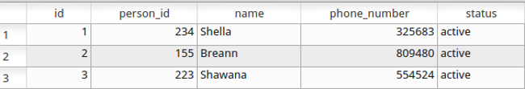

In a SQL database, data is stored in a set of tables. A table contains a collection of entries (="lines"), information of the same type such as personal data or phone contract information.

We want to see what is in the table person:
select * from person;
This is too much information as we are only interested in the name:
select name from person;
In general:
select col1, col2, ... from tablename;
We can get the number of lines of results by using the count command. To get the number of entries in the person table we use
select count(*) from person;
Results might contain duplicates (they form a multi-set). We can get only the distinct results by
select distinct col1,col2, ... from tablename;
Now you have learned enough start writing SQL queries and to answer the first question
1.) Return a list of residences without duplicates.
2.) How many different cities of residence do the people in the persons table have?
Quite often we are not interested in all of the entries of the database, especially because it might contain a huge number of lines. To get only the lines fulfilling some constraints, the where clause is used, e.g:
select name, residence from person where age > 30;
For the different type of data, different constrains make sense. For all kind of data, we can check for equal = and not equal !=. For numbers, one can also compare for larger >, larger or equal >=, smaller <, smaller or equal <=.
For text, we use like, to find entries where the text value in a column contains a string. The string should be surrounded by single quotes ', and you can use the % as a wild-card for unknown parts of a word. E.g. if you search for '%an%', the following words would fit: Banana, fantasy, but not Anna, since this is a Capital A.
3.) Get all people whose names contains "oh".
In SQLite the >,<,= operators for dates, do an lexicographical comparison, not a numeric one. This means that if there is an inconsistent representation of dates, the comparison might fail even though the two values represent the same dates. E.g. if once the format "2014-10-23" and once the format "2014/10/16" is used. Note that here double quotes " are used instead of single quotes '.
flight containg flight data. The column with the dates is called date.
4.) Get all flights before October 20.
Furthermore, the operator in checks if the left-hand-side is a member of the set on the right-hand-side. The two following statements are equivalent
name in ('Philipp', 'Carlos')
name = 'Philipp' or name = 'Carlos'
5.)Formulate two suitable queries to demonstrate that.
Constraints can be combined by the logical operator and and the operator or.
6.) Find all people whose first name is Carlos and who are older than 20 years.
There is another table which is called phone_contract. The column containing the status (active, non-active) is called status.
7.) Find out, how many contracts there are and how many accounts are active.
Usually, it is necessary to get information which is spread over more than one table. For example, you may want to know the names of the people who have an active phone contract.
When you know what you are looking for you are already able to formulate a concrete condition in the where clause. With SQL you can combine information from various tables, e.g.
select person.name, phone_contract.phone_number from person, phone_contract;
Note that we could also write phone_number instead of phone_contract.phone_number as the table person does not contain a column called phone_number and, therefore, no ambiguity could arise.
8.) What does this query return?
To output the matching names and phone numbers, we can use a where clause again:
select p.name, phone_number from person p, phone_contract c where c.name = p.name;
As we did not want to write the complete table name, we have defined and abbreviation in the from clause (person p).
9.) Find all names who have an active phone contract.
10.) Find all names and phone numbers of people who are older than 30.
The methods described above allow to get information from an arbitrary number of tables. But if you want to formulate a condition which depends on values of certain data entries, you need sub-queries.
11.)What does the following query do?
select person.name, person.age, phone_number from person, phone_contract where person.name = phone_contract.name and age in (select age from person where residence = 'Paris');
The part in the last line in parentheses is called a sub-query. Such sub-queries can be a little bit confusing at first sight so you might want to pause for a moment.
Now let's look at the statement above a little bit closer. First, only perform the sub-query. It returns a the list of all ages of persons with residence in Paris. Then then in operator is used to filter the results of the main query on ages occuring in this list.
If you have no more question concerning basics SQL queries, you can procede to the next chapter and solve the theft of the Mona Lisa.
Sub